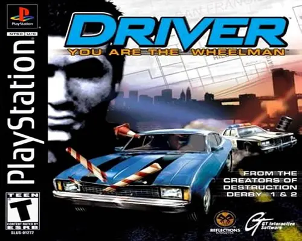

Antes de GTA ser em 3D, existia um herói chamado Tanner. Ele é um detetive infiltrado que dirige como se tivesse o diabo no corpo e uma suspensão feita de gelatina. Prepare-se para perseguir bandidos, fugir de viaturas que surgem do éter e, claro, bater em muitos cones de trânsito em Miami, San Francisco, Los Angeles e New York.
Porque é o simulador definitivo de "perseguição de filme dos anos 70". A física do carro faz você sentir cada curva, e a trilha sonora de funk/jazz é simplesmente impecável. Além disso, se você passar do tutorial na garagem, você já é um vencedor na vida.
Como estamos emulando, você tem o poder dos deuses: use o Save State do menu do emulador para salvar a qualquer momento. Mas, se quiser a experiência raiz, você precisa terminar as missões para o jogo pedir para acessar o seu "Memory Card" virtual.